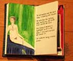

Guest
editors, Mytili
Jagannathan and Elisabeth Joyce
|
Mary
Baine Campbell
Erika Renée Williams
Sara Lundquist
Elizabeth Treadwell
Deborah M. Mix
Cynthia Davidson
Rachel Blau DuPlessis
Linda A. Kinnahan
Jen Hofer
|
(about
this section)
Poetry by
Patrizia Vicinelli
Translated by Carla Billitteri
Coordinated
by Cole Swensen
(about
this section)
|
Interview
between
Gail Scott and Corey Frost
excerpt
from Gail Scott's book, My Paris
|
|
Four
Saints in Three Acts: Stein Collages by
Gonzalo Tena
Glass
Book by Laurie Price

[click
image to enter]
"A
Little Girl Dreams of Taking the Veil," Adapted
for the opera by Carla Harryman and Erling Wold
|
How(ever)
Archive [1983-1992], and How2, V. I, n. 1-3.
|
Guest
editor Carla Harryman:
France
Théoret,
Sawako Nakayasu
Jeanne Heuving
Rebecca Brown
Camille Roy
Chris Tysh
Cole Heinowitz
Jennifer Ginzinger
Lynne Crawford
Sydney Brown |
(about
this section)
Critical
reflections, research, interviews by:
|
Ann
Vickery, from Leaving Lines of Gender
Marina
Morbiducci, "Oriental Peaceful Penetration":
Stein Revisited
Wendy
Tronrud, The Temptation of Neat Intelligibility: an Interview
with dancer/filmaker, Yvonne Rainer
Renata
Morresi, Set Apart: Nancy Cunard
Linda
Russo, The Limited Scope of the Recuperative Model:
a context for reading JoAnn Kyger
Hilda
Bronstein, Mina Loy's Insel as Caustic Critique
of the Surrealist Paradox
Brenda
Hillman, Crossing The Garden: Rae Armantrout's Metaphysics
"Part
II: Contemporary Women Poets Seminar":
presented at New Modernisms conference, Penn State, Fall 1999
Guest
edited
by Sarah Lundquist
Sara Lundquist,
Introduction: The Difficult Soundings of Modernism's Female
Half
Kimberly
Lamm, Modernist Clothes Made New: The Visible Presence
of Zora Neal Hurston and Gertrude Stein in Harryette Mullen's
Trimmings
Nesrin
Eruysal, In Habentibus Symbolum Facilior Est Transitus
Jenny
Goodman, Breaking the Taboo against the Epic
Cynthia
Hogue, I
am not of that feather: Kathleen Fraser's Postmodernist Poetics
Edward
Lintz, Antanaclasis for the Masses: Lancelot Andrewes
and Gertrude Stein
Sara
Lundquist, Hers and Mine / Hers and Mine: H.D. and Barbara
Guest
Caroline
Maun, Evelyn Scott's Precipitations
Heather
Thomas, H.D. and Anne Waldman: Vow to Salvation Poetry
|
(about
this section)
|
Short
commentaries on recent writing by:
|
"Livres
de Poètes", Dale Going talks to six poets about the
books they make, with writing by: Lisa
Kokin, Emily McVarish, Denise Newman, Eléna Rivera,
Jaime Robles, Meredith Stricker

[click
to see full size image]
|
Marina
Camboni,
Dora
Marsden, Ezra Pound, H.D. and “The Art of the Future”: Part
Katie
Degentesh, Freud in Brooklyn: Poems by Joanna Fuhrman
Simone
Fattal, Reading Nathalie Sarraute: A Memoir
Beckian
Fritz Goldberg, Under the Room of What We Say: on Jean
Valentine
Annalisa
Goldoni, Susan Glaspell: from silence to silence
Cynthia
Hogue, Practicing Amnesia and The Fray:
poems by Heather Thomas
Christine
Hume, Is That a Real Poem or Did You Make it Up Yourself?
on Prageeta Sharma
Catherine
Kasper, Thalia Field, Point and Line
Emily
McVarish, Figuring the Word: in the work of Johanna
Drucker
Ramez
Qureshi, Happily by Lyn Hejinian
Harriet
Tarlo & Eileen Gregory, Tarlo & Gregory read Collecott's
H.D. and Sapphism
Beverly
Tsao, Kimiko Hahn: Burning the Incense of the Heart
|
(about
this section)
)postcard
With
email from:
| Jeff
Hamilton, Suzie Rodriguez, Carla Harryman, Holly Iglesias, Nada
Gordon, Arpine Grenier, Marina Morbiducci, Eileen Callahan,
Linda Russo, Catherine Kasper, Margaret Butterfield, Elizabeth
Robinson, Nesrin Eruysal, Fanny Howe |
(about
this section)
Post(ed)
-- recommended
publications
in'
print
-- recent publications
up
date
-- news and announcements
|